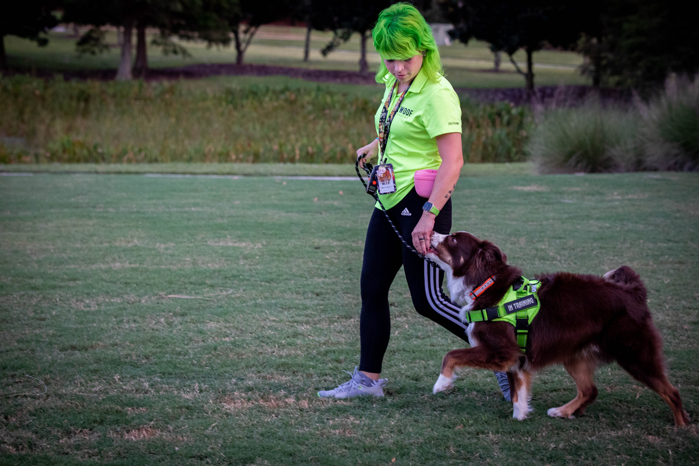
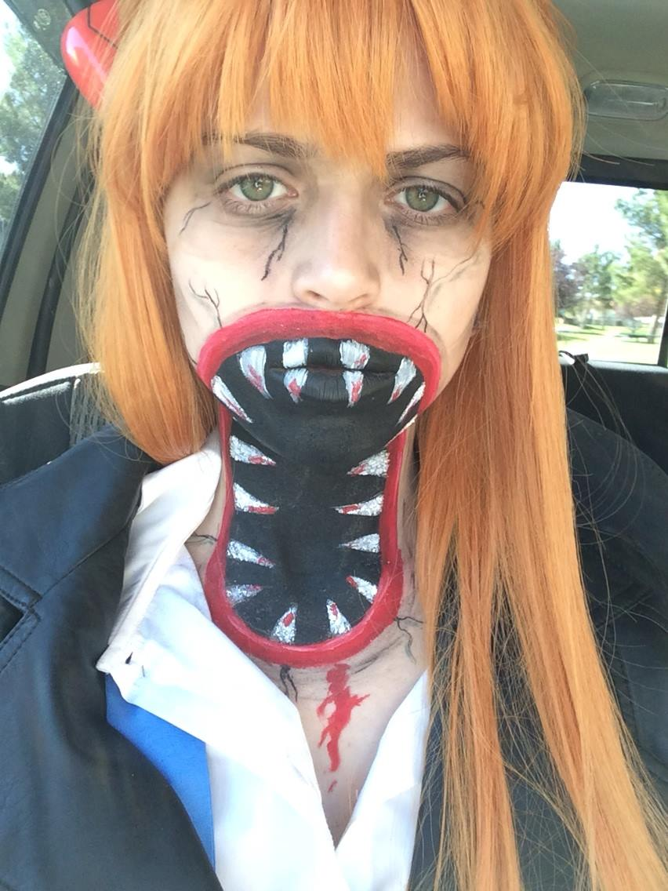

Valerie works training dogs but for her is much more than that. It provides a happiness and special connection that provides a sense of satisfaction and enjoyment.

Valerie works training dogs but for her is much more than that. It provides a happiness and special connection that provides a sense of satisfaction and enjoyment.

Painting is Valerie's creative outlet. She explores different techniques and themes, expressing her emotions and ideas through vibrant colors. This image shows another side of the art, instead of paper, expressed on skin in a anime inspired Halloween costume.

Gardening provides Valerie with a sense of peace and connection to nature. She cultivates various plants, creating a tranquil sanctuary at home. Here she is sharing it with "Tito" a little rat terrier.